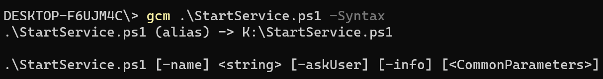
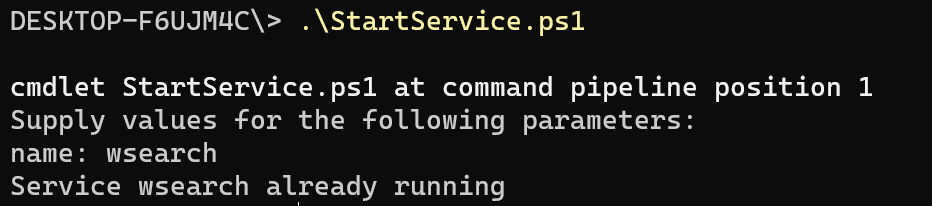
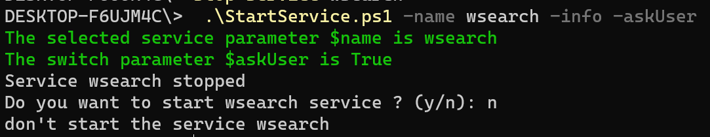
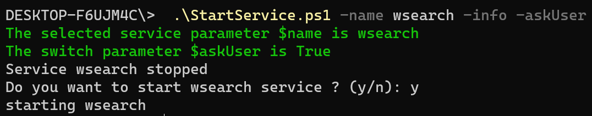

1. Bestaan van een bestand — OefIf1.ps1
Maak een script dat een bestandspad als eerste argument ontvangt.
- Zonder argument verschijnt
Geen parameter. - Voor een bestaand bestand verschijnt
De file <pad> bestaat.. - Anders verschijnt
De file <pad> bestaat niet.. - Gebruik
Test-Path -PathType Leaf.

Mijn antwoord:
2. Status van een service — OefIf2.ps1
Maak een script dat een servicenaam ontvangt en meldt of de service draait of gestopt is. Handel ook een ontbrekende parameter en een onbekende servicenaam af zonder een ongecontroleerde foutmelding.

Mijn antwoord:
3. Service voorwaardelijk starten — StartService.ps1
Maak een geavanceerd script met:
- verplichte parameter
ServiceName; - switches
AskUserenInfo; - informatie over de parameters wanneer
-Infoaanwezig is; - een duidelijke melding voor een onbekende service;
- geen actie wanneer de service al draait;
- starten van een gestopte service, rechtstreeks of na bevestiging met
-AskUser; - een
switchvoor de antwoordenyenn, met een standaardtak voor ongeldige invoer.
Controleer de gegenereerde syntax met Get-Command.

LET OP: Het starten van een service vereist doorgaans administratorrechten. Werk alleen op een labsysteem en kies een onkritieke testservice. Noteer vóór de test de oorspronkelijke status en herstel die nadien met
Stop-Serviceindien nodig.
Test minstens: draaiend, gestopt, onbekend, -Info, -AskUser met y, n en een ongeldig antwoord.





Mijn antwoord:
Eindcontrole
- De drie scripts hebben exact de gevraagde namen.
- Alle beslissingspaden zijn getest en beschreven in
answers.md. - Onbekende bestanden en services veroorzaken geen ongecontroleerde fout.
- De oorspronkelijke servicestatus is hersteld.
- Alle scripts parsen zonder syntaxfouten.
- Je hebt je wijzigingen gecommit en gepusht.